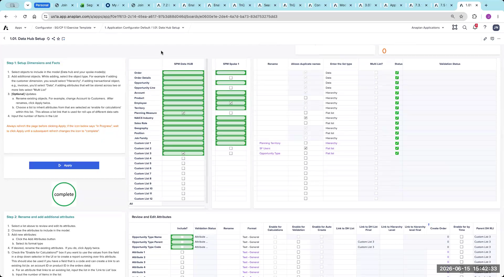
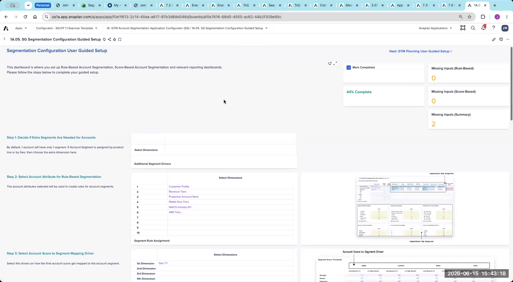

Lab: Segmentation Configurator
CloudWorks case study — Segmentation configurator exercise
This lab is an exercise — there are no answers on this page. Review the CloudWorks case study handout, navigate through the configurator pages, and fill in inputs based on the case study data. The answer key is available in the Appendix → and will be reviewed during the facilitator-led debrief.
Exercise Overview
Using the CloudWorks case study handout, complete the Segmentation section of the configurator. Work through the pages below in order, making configuration decisions based on the case study data. After each configurator page, hit Apply / Calculate before moving on.
What you'll do
- Capture firmographic account attributes on Page 1.01 Data Hub Setup and enable banded counterparts for every quantitative field
- Configure rule-based and score-based segmentation on Page 1A.05 — select rule attributes, scoring dimensions, categorical and numerical metrics, and reporting drivers
- Set up wallet size spend assumption dimensions on Page 1A.03, feeding addressable market into T&Q downstream
- Apply the Rule overrides Score precedence correctly across the configuration
- Verify each step end-to-end with the inline Check my Work button
After each configurator page, hit Apply / Calculate before moving on. If a step asks you to navigate to a specific page and the page name differs slightly in your instance, use your best judgment — configurator page names may vary slightly between versions.
Part 1: Segmentation Configuration
Navigate to the Segmentation section of the configurator. Complete these exercises in order.
S1 — Data Hub Setup — Page 1.01
Review and capture the firmographic account attributes that will drive segmentation. Ensure all quantitative fields have banded counterparts enabled for the rule engine, and that list-formatted attributes are correctly tagged.
- Navigate to Page 1.01: Data Hub Setup.
- Review the key firmographic fields available for the CloudWorks account data: refer to the case study handout for the full attribute list.
- Capture all relevant segmentation attributes/fields — identify which attributes will be used for rule dimensions, scoring, and UCP (Unacceptable Customer Profile) exclusion.
- For each numeric/quantitative field you intend to use (e.g., Employee Count, Annual Revenue): ensure an additional attribute exists for "banding" (e.g., Employee Band, Revenue Band). Enable the "Enable to Calculate" toggle on the banded attribute so the list is generated correctly at application generation.
- Click Apply / Calculate before moving on.
Raw numeric values (like Employee Count = 1,547) cannot be used as rule dimensions. Only list-formatted banded attributes (like Employee Band = "1K–5K") work. If a banded attribute does not yet exist in the data, flag it — it must be created in the source data before the configurator session.

When you've captured the CloudWorks firmographic attributes on Page 1.01 and confirmed banded counterparts exist for every numeric field you intend to use as a rule dimension, click below to verify.
Data Hub Setup captured and banded attributes enabled.
- Page 1.01 Data Hub Setup opened → CloudWorks firmographic attribute list reviewed against the case study handout
- Segmentation attributes captured → rule-dimension, scoring, and UCP-exclusion attributes identified
- Banded counterparts exist for every numeric field → e.g., Employee Count has Employee Band, Annual Revenue has Revenue Band
- "Enable to Calculate" toggle set on each banded attribute → so the list is generated correctly at application generation
- Apply / Calculate clicked → configuration saved before moving on
Ready for S2 — configure Rule-Based and Score-Based Segmentation on Page 1A.05.
S2 — Segmentation Configuration — Rule-Based & Score-Based
Configure the rule-based and score-based segmentation parameters, selecting account attributes, scoring dimensions, and reporting setup based on the CloudWorks case study.
The number of segments and their names (e.g., Strategic, Named, Commercial, SMB) are not configured here. They are defined by admins after application generation via placeholder slots. Do not look for a segment naming input on this page.
- Navigate to Page 1A.05 — Segmentation Configuration Guided Setup in the Segmentation configurator.
- Select account attributes for Rule-Based Segmentation — the attribute list available for selection is populated from your S1 Data Hub Setup step. Choose the attributes relevant to CloudWorks's segmentation rules based on the case study.
- Select Account Score to Segment mapping dimensional drivers — at what level may the score-to-segment threshold differ? (e.g., thresholds may differ by region or industry). Select the applicable dimensions from the case study.
- Select Categorical Metrics to score account — choose the qualitative account attributes (list-formatted) that will be used as scoring inputs.
- Select Numerical Metrics to score account — choose the quantitative attributes (banded) that will be used as scoring inputs. These should correspond to the banded attributes you enabled in S1.
- Select Account Score Metric Drivers — at what dimensions can attribute weights differ? (e.g., a weight for Employee Band may differ by region). Select the applicable dimensions.
- Select applicable reporting dimensions for account segment movements — identify which dimensions should be tracked when accounts move between segments (e.g., year-over-year movement).
- Click Apply / Calculate before moving on.
Rule-Based ALWAYS overrides Score-Based when both are available for the same account. Score-based acts as a catch-all default only where no rule exists. Design your rules with this in mind — a well-designed rule set should cover your most strategically important accounts; scoring handles the rest.

When you've selected the rule attributes, scoring dimensions, categorical and numerical metrics, score-metric drivers, and reporting dimensions on Page 1A.05 — and clicked Apply / Calculate — click below to verify.
Page 1A.05 Segmentation Configuration complete.
- Rule-Based account attributes selected → CloudWorks rule attributes chosen from the S1 attribute pool
- Account Score to Segment mapping drivers set → dimensions where the score-to-segment threshold can differ (e.g., region, industry)
- Categorical Metrics selected → list-formatted qualitative attributes chosen as scoring inputs
- Numerical Metrics selected → banded quantitative attributes from S1 chosen as scoring inputs
- Account Score Metric Drivers set → dimensions where attribute weights can differ
- Reporting dimensions for segment movements selected → e.g., year-over-year movement tracking
Ready for S4 — configure spend assumption dimensions for Wallet Size on Page 1A.03.
An account matches a Rule-Based assignment (Strategic) and also receives a Score-Based assignment (Commercial) via the score-to-segment threshold. Which segment does the generated app assign?
S4 — Wallet Size Configuration — Spend Assumption Dimensions
Configure the spend assumption dimensions and reporting setup for wallet size calculation. This feeds directly into T&Q as the basis for addressable market and target allocation.
- Navigate to Page 1A.03 — Wallet Size Calculation Guided Setup in the Segmentation configurator.
- Select applicable attributes/dimensions to inform different spending assumptions — choose which dimensions drive different spend assumptions (e.g., Industry, Revenue Band). Different industries or account sizes may have different addressable market percentages.
- Select applicable dimension to have a default addressable Market % — choose the dimension at which a default addressable market percentage is applied when no specific assumption exists.
- Select applicable territory hierarchy level for spend index driver — select the hierarchy level at which geographic spend index adjustments are applied (e.g., region-level adjustments to account for market differences).
- Configure any reporting setup and selection drivers applicable for wallet size analysis.
- Click Apply / Calculate before moving on.
Wallet size is optional. If CloudWorks does not have reliable firmographic data to support spend calculations, skip this section. Do not over-engineer a model the customer won't trust or maintain.

When you've configured the spend assumption dimensions, default addressable market %, territory hierarchy level, and any reporting drivers on Page 1A.03 — and clicked Apply / Calculate — click below to verify.
Wallet Size spend assumption configuration complete.
- Spend assumption dimensions selected → e.g., Industry and Revenue Band drive different addressable-market percentages
- Default addressable Market % dimension set → the dimension at which the default applies when no specific assumption exists
- Territory hierarchy level for spend index driver selected → geographic spend-index adjustments applied at the chosen level (e.g., region)
- Reporting setup and selection drivers configured → wallet-size analysis dimensions in place
- Apply / Calculate clicked → wallet-size output is ready to feed T&Q as addressable market and target-allocation basis
Segmentation configurator complete. Proceed to the Debrief Questions below, then compare against the Appendix answer key.
Debrief Questions — Segmentation
- In S1, you identified both qualitative and quantitative segmentation attributes for CloudWorks. Give one example of each. For your quantitative attribute, what banded version did you need to create — and why does that banded version matter for the rule engine?
- In S2, you had to distinguish between Categorical Metrics and Numerical Metrics for scoring. What was the difference in how you selected them, and what does each one produce in the generated app for the admin to manage?
- A colleague says: "We configured score-based segmentation, so we know every account will get a segment — we don't really need rule-based." How do you respond? What is the correct relationship between rule-based and score-based segmentation?
- In S4, you configured spend assumption dimensions by Industry and Revenue Band. A customer asks: "Can we set different addressable market percentages for each geography as well?" What would you need to configure to support that, and where in the configurator would it apply?
- UCP stands for Unacceptable Customer Profile. What does it do to accounts that match its criteria? How is this different from what a learner might incorrectly assume it does?
When the group reconvenes, refer to the Answer Key in the Appendix to compare your decisions. There are often multiple valid approaches — the goal is to understand the reasoning behind each choice.